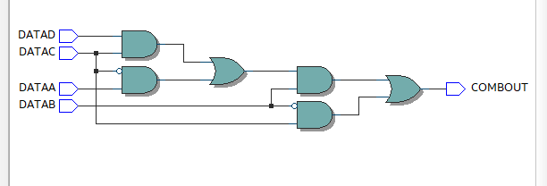
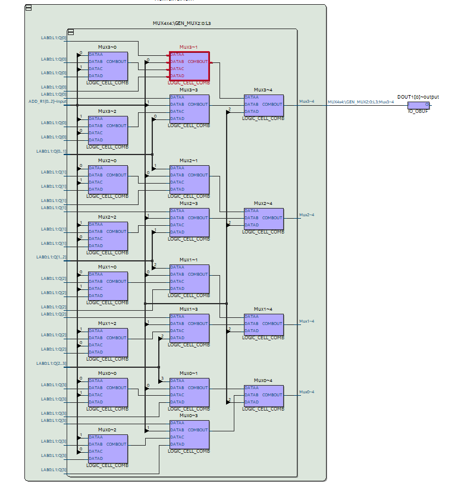
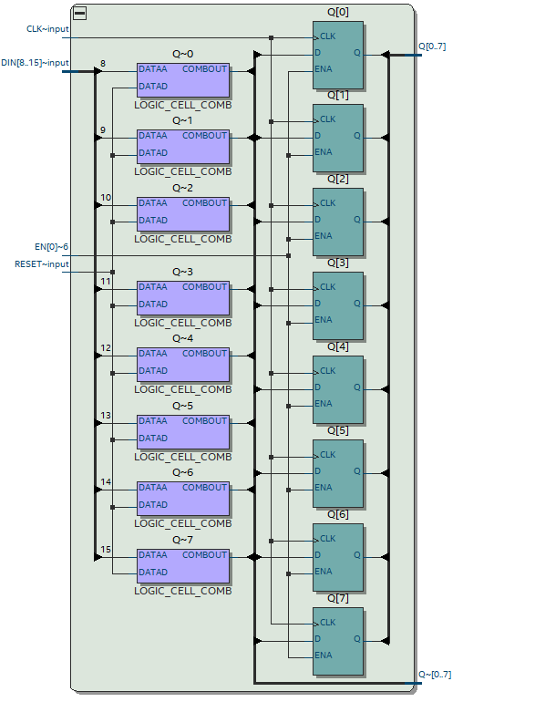
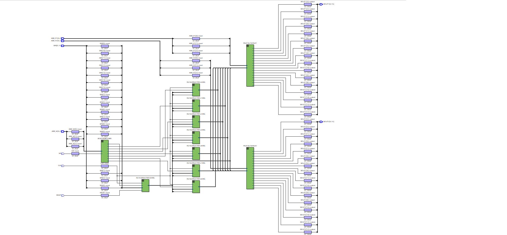
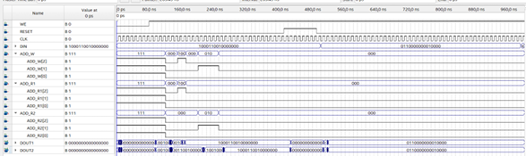

Welcome to My Engineering Portfolio
My name is Diego Talome, and I’m currently pursuing my degree in Computer Engineering at the University of Alaska Fairbanks. This portfolio showcases a selection of my projects, ranging from digital logic design and embedded systems to analog circuit development and software engineering.
This website is structured to present not only the functionality of each project, but also to explain the design process behind them, the challenges I encountered, and the skills I applied and developed along the way. Each section is crafted to be accessible to both engineers and curious viewers interested in the behind-the-scenes of how systems work.
The projects you’ll find here include a maze-based game written in C++ using a stack navigation system, a three-stage analog amplifier designed from scratch, and a modular 16-bit MIPS processor constructed using VHDL, featuring components like a register file and arithmetic logic unit (ALU).
I built this portfolio as a professional presentation tool to help communicate my work during job and internship applications. It’s also a personal reflection space—an organized timeline of my progress and a foundation for everything I’ll continue to build.
Maze Stack Game
This project was created as a final for CS 301 and centers around a stack-based game implemented entirely in C++. The player explores a maze composed of multiple rooms, using vertical navigation through stacks and horizontal transitions through doorways.
The game runs in a text-based console. You can move up or down using keys 'w' and 's', enter doors using 'x', grab a treasure with 'z', and quit the game with 'q'. The stack structure provides a great way to simulate depth, such as tiles inside a room being accessed one layer at a time.
The logic behind the maze is structured using the Standard Template Library (STL) stack. This allows the tiles to be pushed or popped efficiently, giving us natural room traversal and reset behaviors. Each room is essentially a vertical column, and your pointer navigates up or down it like a memory stack.
We also use vectors to temporarily reverse the stack for display purposes, and simple pointer arithmetic to track the current tile the player is on. Rather than actual memory addresses, we use indices as abstracted pointers to simplify logic and avoid direct memory manipulation.
The project demonstrates a solid understanding of stack operations, pointer simulation, modular logic with functions, and interactive loop structures — all important foundations in computer engineering and systems programming.
📁 View/Download MazeGame FolderProject for CS 301
16-BIT MIPS Design
This 16-bit MIPS processor is a simplified architecture designed to demonstrate core CPU operations such as register access, arithmetic processing, and instruction execution. Each component works together to simulate real-world instruction flow in a modular, scalable way.
Select the tabs above to dive deeper into the specific architectural blocks, including the Arithmetic Logic Unit (ALU) and the Register File.
Arithmetic Logic Unit (ALU)
An Arithmetic Logic Unit (ALU) is a core component of the CPU responsible for executing operations like addition, subtraction, bitwise AND/OR/XOR, and comparisons. It uses input from the register file and returns results back into memory or registers.
This ALU design project is currently under development. Diagrams, waveform simulations, and implementation details will be added soon.
Project for UAF EE 443 LAB with Dr. Raskovic.
Register File
A register file is a small, fast memory unit within a CPU that shifts temporary data needed during instruction execution. Unlike RAM, the register file offers quick access to values used in arithmetic, logic, and data movement operations.
Each register is built with flip-flops and stores a fixed-width word (e.g., 8 bits). Flip-flops are synchronized with a clock and controlled by enable and reset lines.
1. Basic 4-to-1 MUX Logic Cell

This logic unit selects one of four inputs based on control signals.
2. MUX 16x4 Grid

This expands the MUX logic to 16 registers for scalable readout.
3. Resource Properties

Indicates how FPGA logic and routing resources are used.
4. Register Cell Structure

Each register stores 8 bits using D flip-flops, controlled by clock, reset, and write-enable lines.
5. Full Register File Integration

Top-level schematic including decoder, registers, and dual-read MUXes.
6. Register File Simulation

Simulation showing correct timing and value transfer in the file.
Project for UAF EE 443 LAB with Dr. Raskovic.